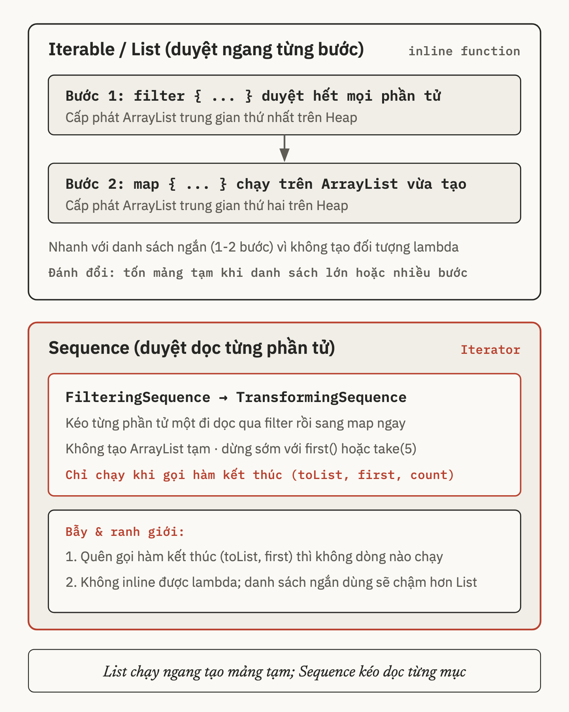

Collections & Sequence
Bản 30 giây
Khi bạn nối filter rồi map trên một List, Kotlin chạy hết bước một để tạo danh sách tạm rồi mới chạy bước hai. Nếu danh sách có hàng vạn mục hoặc nối nhiều bước, những danh sách tạm này sẽ làm tốn bộ nhớ. Lúc đó, chuyển sang Sequence bằng asSequence() giúp máy lấy từng phần tử đi qua hết các bước mà không tạo danh sách trung gian.
Cần biết trước
Vấn đề buộc nó ra đời
Trong java.util.Collection của Java từ thời JDK 1.2 (1998), giao diện List hay Set luôn có sẵn hàm add và remove. Bất kỳ hàm nào nhận danh sách cũng có thể âm thầm xóa hoặc sửa phần tử bên trong mà bạn không kiểm soát được.
Đến Java 8 (2014), hãng bổ sung Stream để nối chuỗi filter và map theo kiểu tính toán lười (lazy evaluation). Tuy nhiên, trên Android thời đó, các thiết bị dưới API 24 (Android 7.0, năm 2016) không dùng được Stream của Java 8.
Năm 2016, Kotlin 1.0 tách rõ giao diện chỉ đọc (List, Set, Map) khỏi giao diện cho sửa (MutableList, MutableSet, MutableMap). Đồng thời, Kotlin đưa vào Sequence cùng các hàm mở rộng inline trên Iterable để chạy mượt trên cả JVM 6 và mọi máy Android.
Nó thực sự là cái gì
Giao diện chỉ đọc List trong Kotlin không phải là một danh sách bất biến tuyệt đối (immutable) ở tầng bộ nhớ. Thực chất, nó chỉ là mặt nạ lúc biên dịch giấu add và remove. Đối tượng thật trên Heap thường vẫn là danh sách Java sửa được. Tương tự, Sequence không chứa dữ liệu mà chỉ bọc công thức tạo con trỏ duyệt (Iterator) khi có lệnh lấy kết quả.
Cơ chế

Các hàm filter và map trên Iterable (như List, Set) đều là inline function nên chạy ngay lập tức theo chiều ngang (eager evaluation). Mỗi bước duyệt qua toàn bộ phần tử và cấp phát một ArrayList trung gian mới trên Heap trước khi chuyển sang bước kế tiếp. Ngược lại, các bước trung gian của Sequence không inline, mà trả về đối tượng bọc như FilteringSequence hay TransformingSequence giữ lambda bên trong. Chỉ khi bạn gọi hàm kết thúc (terminal operation) như toList() hoặc first(), Sequence mới kéo từng phần tử đi dọc qua hết mọi bước.
Đánh đổi
Chạy trên List không tốn đối tượng lambda nhờ từ khóa inline, nên rất nhanh khi danh sách ngắn hoặc ít bước. Đổi lại, mỗi bước trong chuỗi List lại đẻ ra một mảng tạm trên Heap và phải duyệt hết danh sách. Còn Sequence không tạo danh sách tạm và dừng sớm được ngay với first(), nhưng tốn đối tượng Sequence cho từng bước.
Nguyên lý gốc
Duyệt ngang từng bước giúp tận dụng vòng lặp đơn giản, còn duyệt dọc từng phần tử giúp dừng sớm và không tạo mảng tạm.
Key insight
Dùng
asSequence()cho danh sách ngắn ít bước không làm app nhanh hơn, mà chậm đi vì mấtinlinevà tốn đối tượngSequence.
Ví von
Xử lý trên List giống dây chuyền dán nhãn hết cả 1.000 hộp, chất đầy kho tạm rồi mới bê sang khâu buộc dây. Còn Sequence là cầm từng hộp một, dán nhãn xong buộc dây luôn rồi giao ngay cho khách đầu tiên cần.
Khuôn mẫu chuẩn
fun findFirstAdultEmails(users: List<User>): List<String> {
return users.asSequence()
.filter { user -> user.age >= 18 }
.map { user -> user.email.lowercase() }
.take(5)
.toList()
}
Bẫy & ranh giới
Nếu bạn viết chuỗi asSequence().filter { ... }.map { ... } mà quên gọi hàm kết thúc như toList() hay first(), không có dòng nào bên trong được chạy. Bẫy thứ hai là dùng đối tượng có biến var làm khóa của Set hoặc Map. Khi biến đó đổi, mã hashCode lệch khiến bạn tìm lại luôn ra null. Ngoài ra, một Sequence bọc luồng đọc một lần thì không thể duyệt lại lần thứ hai, nếu cố gọi tiếp sẽ ném lỗi IllegalStateException.
Câu hỏi thực chiến
Hỏi: Khai báo biến kiểu List<String> trong Kotlin thì có đảm bảo 100% không ai sửa được danh sách đó không?
Không. List trong Kotlin chỉ là giao diện chỉ đọc (read-only) chứ không khóa cứng vùng nhớ bên dưới. Nếu nơi khác giữ tham chiếu MutableList tới vùng nhớ đó hoặc ép kiểu sang ArrayList, danh sách vẫn bị sửa.
Hỏi: Có nên thêm asSequence() vào mọi chỗ dùng filter và map cho tiết kiệm bộ nhớ không?
Không nên. Với danh sách vài chục phần tử và chỉ có 1-2 bước, hàm filter của List là inline nên không tạo lambda trên Heap. Nếu gắn asSequence(), máy không inline được mà phải tạo đối tượng Sequence và đối tượng lambda cho từng bước, làm tốn CPU hơn.
Hỏi: Trong chuỗi xử lý có cả filter và map, đặt thứ tự hàm nào trước sẽ chạy nhanh hơn?
Bạn nên đặt filter lên trước rồi mới gọi map. Làm vậy giúp loại bỏ sớm phần tử không hợp lệ, nên bước map chỉ chạy trên số ít phần tử còn lại.
Hỏi: Khi nào thì Sequence ăn đứt List rõ rệt nhất dù danh sách không quá dài?
Khi chuỗi xử lý kết thúc bằng một hàm dừng sớm như first(), find(), any() hoặc take(5). Với List, bước map phía trước vẫn phải chạy hết cả 10.000 phần tử rồi first() mới lấy mục đầu tiên. Còn Sequence trả kết quả ngay khi gặp phần tử đầu tiên thỏa điều kiện và bỏ qua luôn 9.999 phần tử còn lại.
Ý bắt buộc khi giải thích lại
- Phân biệt được cách duyệt ngang (eager, hàm inline, tạo ArrayList tạm sau mỗi bước) của Iterable với cách duyệt dọc từng phần tử (lazy, cần hàm kết thúc) của Sequence.
- Giải thích được vì sao List trong Kotlin chỉ là giao diện chỉ đọc (read-only) ở lúc biên dịch chứ không phải bất biến tuyệt đối trên Heap.
- Nêu được lý do không dùng asSequence() cho danh sách nhỏ ít bước và lợi thế dừng sớm khi kết hợp Sequence với first() hoặc take().
- Viết lại được khuôn mẫu chuẩn từ trí nhớ.
Nguồn
- Collections overview — Kotlin Documentation
- Sequences — Kotlin Documentation
- Collection operations overview — Kotlin